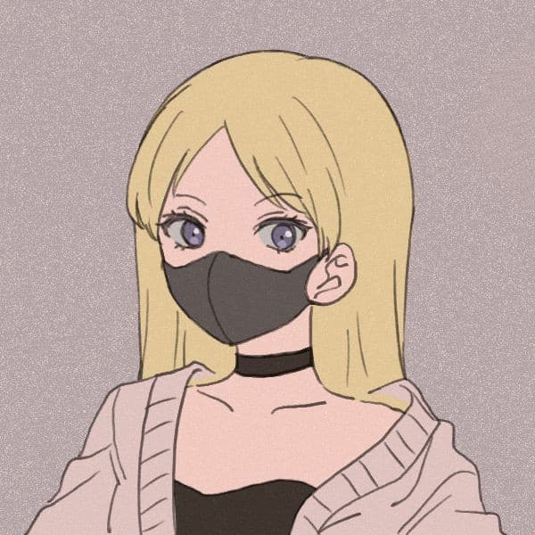

Kilka informacji na mój temat...
Mam na imię Weronika. Jestem studentką drugiego roku Turystyki i rekreacji UAM w Poznaniu. Do niedawna w ogóle nie zastanawiałam się nad nauką programowania. Doprowadziła mnie tu spontaniczna decyzja. Nigdy nie sądziłam, że zainteresuję się czymś takim, zwłaszcza patrząc na to ile pracy trzeba włożyć w naukę tego wszystkiego. Lubię długie spacery, najlepiej w lesie, gdyż uwielbiam odłosy natury (nie licząc komarów).
Moje zainteresowania
- Czytanie
- Śpiewanie
- Pisanie własnych historii
- Granie w gry komputerowe
- Oglądanie seriali, filmów, anime
Ulubione anime
| Tytuł anime | Data emisji | Liczba sezonów |
|---|---|---|
| Tokyo Ghoul | 2014-2018 | 4 |
| Shingeki no Kyojin | 2013-2022 | 4 |
| Kuroko no Basket | 2012-2015 | 3 |
| Death Note | 2006-2007 | 1 |
Tokyo Ghoul
Anime o świecie, w którym istnieją istoty zwane ghoulami. Żywią się one ludzkim mięsem, lecz wyglądem nie odróżniają się od ludzi. W tej rzeczywistości metropolia Tokio podzielona jest na ponumerowane dzielnice, w których pobyt ghouli nadzorują tzw. ,,gołębie" należące do CCG, inaczej — tropiciele ghouli. Kaneki Ken na skutek nieszczęśliwego ciągu wydarzeń staje się pół-ghoulem. Zderzenie z nową rzeczywistością okazuje się ciężkim wyzwaniem, bowiem w pewnym momencie Kaneki staje się głodny i spotyka innych przedstawicieli ghouli. Ci bardziej przyjaźni nauczą go, jak funkcjonować w ich świecie. Sam Kaneki w miarę zacieśniania więzi z nowymi przyjaciółmi przekona się, czy ich świat jest naprawdę tak zły, jak się go powszechnie przedstawia. Fabuła ekranizacji skupia się głównie na tym, jak Kaneki Ken poznaje swoją nową rzeczywistość oraz stara się zaakceptować nowego siebie – jako pół-ghoul, będąc rozdartym pomiędzy światem ludzi i ghouli.
Shingeki no Kyojin
Bezbronna ludzkość na skraju wyginięcia chowa się za olbrzymimi, zesłanymi przez samych bogów murami. Wrogiem są nieśmiertelne, mięsożerne, gigantyczne istoty o ludzkich kształtach – tytułowi tytani. Nie posiadają one inteligencji, niczym ruchome zwłoki tłoczą się pod murami, wabione ludzkim zapachem. Nigdy nie udałoby im się zagrozić ludziom jeszcze raz, gdyby nie pewne wydarzenie, w skutek którego boska ochrona zostaje naruszona, a w murze pojawia się wyłom pozwalający naturalnym wrogom ludzi wedrzeć się do środka. W tak niespokojnych czasach przebiega młodość trójki głównych bohaterów: Erena – żyjącego nienawiścią do tytanów młodzieńca o wielkich ambicjach i gwałtownym usposobieniu, Mikasy – przybranej siostry Erena, cichej, spokojnej, zawsze opanowanej dziewczyny, pałającej siostrzaną miłością do brata, a kiedy trzeba - szybkiej, precyzyjnej i zabójczej, oraz Armina – tchórzliwego, aczkolwiek bystrego nastolatka o niebywałej zdolności oceny sytuacji i znajdowania wyjścia z wszelkich tarapatów. Razem pragną dołączyć do jednostki zwiadowczej, czyli jedynych ludzi, którzy kiedykolwiek odważyli się stawić czoła tytanom w otwartej walce...
Kuroko no Basket
Głównymi bohaterami są 16-letni Kuroko Tetsuya – były gracz legendarnej drużyny koszykarskiej Teikō, zwanej Pokoleniem Cudów – oraz Kagami Taiga, który grał w koszykówkę, mieszkając w Ameryce. Obaj stają się uczniami Liceum Seirin, gdzie wstępują do zespołu. Ich rywalami są byli członkowie Pokolenia Cudów: przepełniony optymizmem i zapałem Kise, perfekcyjny strzelec Midorima, agresywny, nieprawdopodobnie zwinny Aomine, przytłaczający wzrostem i siłą Murasakibara oraz dawny kapitan drużyny, Akashi. Jak można się domyślić, motywem przewodnim tej serii jest właśnie koszykówka, a właściwie dążenie drużyny Seirin do osiągnięcia mistrzostwa. Nie będzie to jednak łatwe, jako że żaden z członków Pokolenia Cudów ani myśli oddać pucharu drugiemu. A dziwnym trafem wszyscy znaleźli się w innych drużynach, przez co nie pałają do siebie sympatią i robią wszystko, żeby wygrać.
Death Note
Yagami Light, nastoletni licealista będący prymusem w każdym przedmiocie szkolnym, znajduje nietypowy notatnik z napisanym na nim tytułem „Death Note”. Według zapisanych w nim zasad, wpisując imię i nazwisko wybranej osoby (znając jej wygląd) można sprawić, by ta osoba zmarła na zawał serca lub w inny określony przez użytkownika notesu sposób. Light początkowo myśli, że to żart, jednak z ciekawości wpisuje dane kryminalisty pokazanego w telewizji. Jak się po chwili okazuje, ów notatnik działa, a, co więcej, należy on do jednego z Shinigami o imieniu Ryuuk. Według zasad obowiązujących w świecie Shinigami, Ryuuk musi zostać z Lightem aż do jego śmierci. Jest on widoczny tylko dla osób, które dotknęły notatnika. Chłopak szybko oswaja się z obecnością boga śmierci oraz zabójczą mocą, którą posiadł. Co więcej, postanawia ją wykorzystać, by stworzyć świat idealny, bez przemocy, i być jego panem. Od czasu, gdy zaczął zabijać najgroźniejszych kryminalistów, zyskał rzesze fanów nazywających go Kirą, jak i wrogów. Light sam staje się zabójcą. Znając sytuację, w jakiej świat się aktualnie znajduje, akcję podejmuje FBI, japońska policja oraz słynny anonimowy detektyw L stojący na czele grupy zadaniowej, a u jego boku także ojciec Lighta. Zaczyna się wielki pościg, by zatrzymać ogromną serię zabójstw popełnianych przez Kirę. Tak właśnie powstaje walka między Yagamim Lightem (Kirą) i L'em.